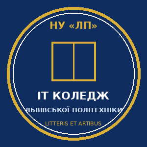

Логотип навчального закладу

Про офіційний канал коледжу
@itcollegelviv • ВСП «Фаховий коледж інформаційних технологій Національного університету «Львівська політехніка» (LITTERIS ET ARTIBUS).
Офіційний YouTube-канал ІТ коледжу Львівської політехніки: освітні програми, подкасти для абітурієнтів, студентське життя та новини спеціальностей.